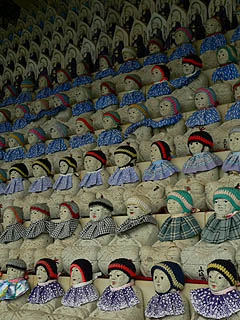

万体地蔵苑/兵庫県家島町
姫路沖にある家島に万体地蔵苑なる魅惑的なネーミングの寺があると聞いた。
姫路港から船で30分程の呑気な船旅だ・・・・・・と思っていたら、この日は豪雨＆暴風の大荒れの天気。港には立派なターミナルがあったが、何故か私の乗る予定の船の待合所は岸壁に建つ足場パイプとビニールで囲まれた激しっぶい小屋。拾って来たようなソファーに座り積み上げられた漫画ゴラクを読んでいると、段々波が高くなって来た。係留作業をしている人に「船、揺れますか？」と聞いたら一言「ああ、揺れるね」って・・・
で、何とか家島に辿り着いた。
家島の宮という港町は平地が少なくなぜか5〜6階建ての建物が密集している。
道は海沿いのメインの道以外は狭く入り組んでいて、さして大きくもない街なれど迷路のような複雑な街だった。
そんな街を抜け、車一台、人ひとり、猫一匹いない道をのぼっていくと、その先に武道館のような屋根が見えて来た。
これが万体地蔵苑である。
大変失礼だが島の規模に似つかわしくないとても立派な寺だ。
本堂を中心に幾つか小さなお堂が周りを取り囲んでいる。その中でも一際目立つのが万体地蔵だ。
これが万体地蔵である。中央の6角錐の雛壇に積まれたお地蔵さんの大群の上に大きな屋根が架かっている塩梅。
屋根は12本の柱で支えられており柱間の欄間にはそれぞれ干支のレリーフが刻まれている。
赤い柱が豪雨の中で、その鮮やかさを際立たせていた。
で、これが内部である。
キタキタキタキタ〜！お地蔵さんピラミッド！
頂上まで埋め尽くされた大量のお地蔵さんの群れ。そしてその地蔵ピラミッドをスッポリ覆う大屋根の真ん中には花なのだろうか光なのだろうか、やけにシンボリックな丸い飾りが取付けられている。
これだけのお地蔵さんがピラミッド状に並んでいるのだけでもビックリなのだが、この常識はずれの規模の大屋根がさらにSFチックな妄想をかき立ててくれるのだ。
まるで全てのお地蔵さんがUFOに吸い上げられていくかのように見えてしまう。
マザーシップコネクション地蔵。
雨が激しくなってきたので雨宿りがてらお地蔵さんを一周してみた。
万体とはいうもののまだ一万体はないだろう。目標、万体地蔵と言う事で。

六面のそれぞれに違う色のお地蔵さんが並んでいる。
赤、ピンク、黄、白、緑、青の六色のヨダレ掛けや帽子、または色が塗られたりしていた。
お地蔵さんの形状は下が全身彫りの大きな座像、で、真ん中は舟形の半身彫り。さらに一番上の方は良く見えなかったが、小さなお地蔵さんが並んでいて、六角錐のパースがより強調されていて、それがまた一段とUFO吸い上げっぽさを演出している。
何だか下から大屋根の天井を見上げていると自分も吸い上げられてしまうような気分になってしまう。
「おっ、俺も連れてってくれえ〜」
・・・取り乱してしまって、失礼いたしました。
万体地蔵堂の隣にもお地蔵さんが並んでいて、その隣は一段高くなっていて、大きな金ぴかのお地蔵さんが立っていた。
天徳光地蔵尊という名前で高さは台座抜きで４〜５メートル位だったと思う。
本堂の左隣には七福神堂があった。七福神が横一列に並んでいる。
この七福神の造形を見ると何とな〜く、この寺のニュアンスが伺えるかと思う。
世田谷七福神に通ずる造形感覚、とでも云ったらいいのだろうか。ブッ飛んでいるという程ではないが確実に俺ワールド臭が醸し出されている。
これは本堂右のお堂にあった木彫像。ここを開山した住職なのだろうか。
この寺は昭和39年に開山した寺で、境内にある堂宇はほとんどその頃に建てられたという。京都の金星からの使者を祀る鞍馬寺の末寺だとのことだ。
そう考えると先程、万体地蔵の天井に吸い上げられそうになった感覚も決して偶然ではないのだろうか・・・
もしかして金星に連れてかれちゃうトコだった？あっぶね〜。
とはいいつつ、勿論、本堂にUFOが奉納してある訳でもなく（あってもいいんですけど、いや、あって欲しかった）、本尊がタコみたいな金星人（それは火星人だっつーの！）な訳でもない。ごくごく普通の真言系のお寺みたいだった。
大きな天徳光地蔵の足元にもお地蔵さんがズラリと並んでいた。
一体ずつに何だかありがたそうなお説教が書かれてる。「迷うな疑うな信じよ時節を待てよ真如の月は宿るなり」・・・いや〜全くその通りですな〜。
それよりも注目なのはお地蔵さんの前に置いてあった謎のレバー。
コレって船のハンドルだっけ？詳しい事は知らないが、波切十二支地蔵尊奉賽とある。
「ご縁のある地蔵尊のところにハンドルを回し矢印を合わせ祈念してご奉納下さい。♪良い音がします」
という説明が。これはもしかしてトリッキーな仕掛けがあるのでは・・・お賽銭を入れるとレバーに合わせたお地蔵さんだけ前に出て来るとか、回るとか、喋るとか・・・と、期待しつつお賽銭を投入したが特に何も起こらなかった。
あ、「良い音がします」って、上から吊ってある鐘の事でした。確かに良い音がしました・・・
万体地蔵があるエリアから一段下がったところには不動堂や地蔵堂があった。
こちらは子安弘法大師像。やはり先程の七福神と同じ俺オーラを感じる。
ところでここにある地蔵は何故か化粧地蔵が多い。家島や姫路には化粧地蔵の風習がないのに不思議だ。
もしかして、本山が京都の寺だから、というのと関係あるのだろうか？
・・・いや、ここのオーナーの趣味なんだろうな・・・
是非、陽気のいい日にまた訪れたい愉快な寺だった。
ちなみに姫路に戻る船の待合所は海に浮かぶ10畳ほどの艀でした。船に乗る前に酔ってしまったのは言う迄もない。
2005.5.
珍寺大道場 HOME